Baú, caixa de saque e contêiner lacrado · r3d azul
- Refeito pela referência do dono (
refs/bau_referencia_dono.png): agora é um case de transporte de plástico rígido, comprido (mais largo que fundo), com quinas e arestas arredondadas, em azul royal saturado com brilho especular claro nas arestas de cima. - Tampa com 4 gomos paralelos de frente pra trás e os sulcos escuros entre eles (leem em 32 px; a caixa de saque e o ícone, menores, ficam com 3). Faixa cinza-prata contornando a caixa na emenda, um pouco abaixo do meio. Trinco de metal à direita, em cima da faixa, com o recorte vertical logo abaixo dividindo a frente do corpo em duas partes. Alça de metal na lateral esquerda.
- Saíram o LED, o friso laranja e a base de metal: o visual é limpo como na referência.
- Família: baú aberto = tampa levantada (em pé, girada na dobradiça de trás) com o conteúdo à mostra; caixa de saque = o mesmo case menor, cheia (fechada) × vazia (tampa levantada, miolo vazio); lacrado = o mesmo case maior, com duas cintas de aço por cima da emenda e o selo dourado da colônia.
- Motor: o
r3d.pyganhou uma primitiva nova,Scene.rbox(caixa de quinas arredondadas: faces, arestas em quarto de cilindro e cantos em oitavo de esfera). O resto do motor não mudou e continua reproduzindo o experimento pixel a pixel.
Referência do dono × resultado
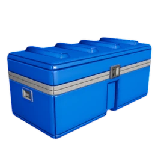
chest.png ampliado 8×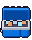
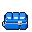

O que veio da referência: a forma de case arredondado, a proporção comprida, os 4 gomos da tampa, a faixa prata na emenda, o trinco à direita com o recorte embaixo, a alça na lateral esquerda e o azul royal com brilho nas arestas. O que muda pro jogo: a câmera é a de frente do 3/4 (a referência é de quina), então a lateral esquerda não aparece e a alça vira um tiquinho de metal saindo da silhueta; a luz vem de cima-esquerda, como nas máquinas.
v1.0 × v1.1
chest.png
chest_open.png
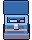
icon_chest.png
loot_crate.png

loot_crate_empty.png
container_sealed.png
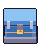

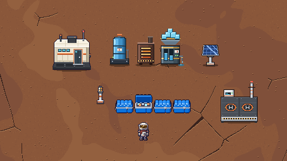
v1.0 · o que tinha (histórico)
- Um modelo só pra toda caixa do jogo, no motor r3d das máquinas experimentais: base de metal, corpo azul com
o painel rebaixado na frente, um friso laranja de acento, tampa com a emenda escura e o trinco de aço com LED. É a
forma do
chest()do experimento, recolorida pro padrão azul, sem detalhe industrial a mais (sem rebite e sem faixa de advertência), como o dono pediu. - Baú (
chest,chest_open,icon_chest) substitui o armário de hoje. Caixa de saque (loot_crate,loot_crate_empty) é o mesmo modelo menor. Contêiner lacrado (container_sealed, novo) é o mesmo modelo maior, com duas travas, a placa do selo da colônia em dourado e o LED vermelho. - Cheia × vazia/aberta muda só a tampa e o conteúdo, nunca a cor. LED: verde no baú, âmbar na caixa de saque cheia (como hoje), vermelho no lacrado.
- O motor
r3d.pyfoi portado protools/sprites/, autocontido; ele reproduz pixel a pixel o baú do experimento.
A família
Caixa de saque (32×32) · baú (32×40) · contêiner lacrado (40×44). Ampliado 5×.
Hoje no jogo × v1.1
Baú fechado · chest.png · 32×40

Baú aberto · chest_open.png · 32×40
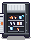
Ícone do baú · icon_chest.png · 16×16
Caixa de saque cheia · loot_crate.png · 32×32
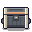
Caixa de saque vazia · loot_crate_empty.png · 32×32
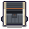
Contêiner lacrado · container_sealed.png · 40×44 (proposta)
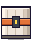
Animações
Na base, com as máquinas e o Explorador
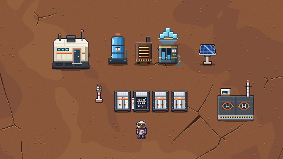
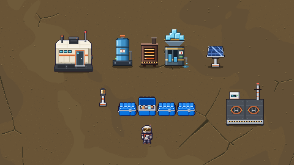
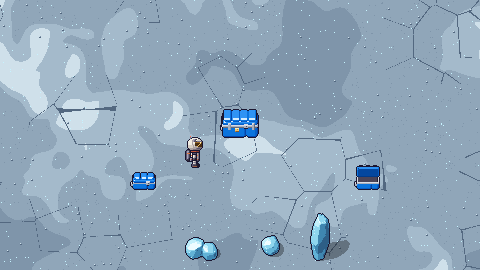
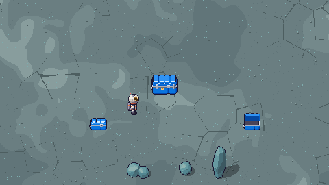
Recortes 480×270 (metade da tela do jogo) ampliados 2×, montados só com os sprites e ordenados pelo pé, como o jogo desenha. O chão é o da v9 (planalto e faixa gelada).
Nota sobre a paleta azul
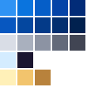
- ROYAL (plástico):
#2f93f4#0a74de#055ec8#0444a8#022c78 - ROYAL_IN (sulcos e lado de dentro):
#0757c0#04479f#033a88#022f70#01214f - SILVER (faixa, trinco, alça):
#d9dde6#a9b0be#8c93a3#636a7a#414553 - brilho e contorno:
#d4ecff#1b1630 - selo do lacrado:
#fff0b8#f2c46d#b8823c - As cores saíram da referência (frente
#007de0, lados#0046b7) e foram puxadas pro 3/4 do jogo: o r3d acende o tampo com o tom 0 (#2f93f4), a frente com o 1 (#0a74de, o azul royal) e a lateral com o 3. O brilho especular (#d4ecff) só pega as arestas de cima viradas pra luz. - É um azul royal saturado, bem mais fundo e menos verde que o ciano do O₂ (
#59d0e6) e o gelo: não confunde com a UI nem com o minério. Destaca no ocre do Árido, no verde do Verde e no gelo do bolsão. - A faixa, o trinco e a alça usam um prata frio (
SILVER), escurecido pra não virar uma linha branca em 1×.
Pro Dev integrar
- Baú:
chest.pngechest_open.pngcontinuam 32×40, ancorados no centro da base (o_blit_anchoredde hoje, pé na borda de baixo do tile). Nada muda no código além de trocar o PNG.icon_chest.pngcontinua 16×16. - Caixa de saque:
loot_crate.png/loot_crate_empty.pngcontinuam 32×32, blit no canto do tile (draw_crate), a base da caixa na última linha do sprite. - Contêiner lacrado:
container_sealed.png40×44 (o placeholder é 32×40). O render já mede o sprite (tx·32 + 16 − w/2,(ty + 1)·32 − h), então ele passa 4 px de cada lado do tile, como as máquinas de 40 px. Continua bloqueando 1 tile. - v1.1: mesmos arquivos e tamanhos da v1.0; só o desenho mudou.
- Sem sombra no sprite (como as máquinas r3d do experimento): se quiser, o jogo põe a sombra de chão de sempre.
- Contorno do alvo do E: o
outline_offunciona igual (silhueta opaca). - Regerar:
python3 tools/sprites/chests_r3d.py(determinístico; os PNGs saem emreports/design/bau_r3d/pendentes/). Na promoção, copia proassets/sprites/.